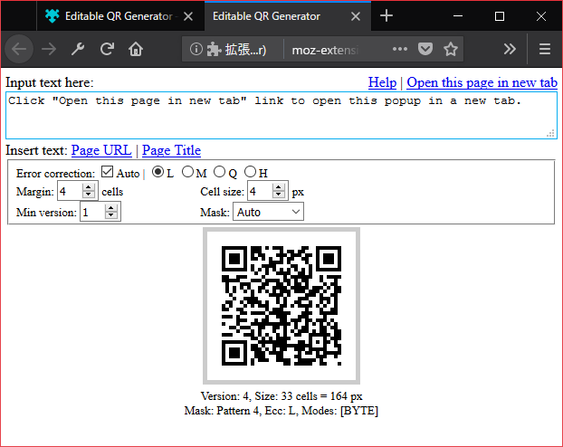
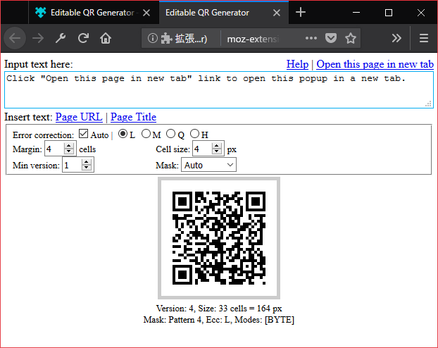

Thank you for your downloading. This is editable and configurable offline QR Code generator Web extension addon.

This addon creates a toolbar button with a popup page. You can generate QR Code by entering any text in the textarea on the head of the popup.
By clicking the links beside "Insert page", you can insert the URL and the title of the current page into the textarea.

By changing form inputs in the fieldset middle of the popup, you can Configure QR Code setting. You can check the description in the tooltips of the form inputs.
By clicking the QR Code canvas, you can Open the QR Code image in a new tab. You can save the QR Code in the new tab.
Also, if you are using Firefox, you can directly save the QR Code image by right clicking the the QR Code canvas.
 

If you feel it is difficult to edit in the popup, click the 'Open this page in new tab' to open the popup in a new tab.
MIT License. Third-party libraries are listed below.
This project uses following Third-party libraries.
QR Code is a registered trademark of DENSO WAVE INCORPORATED.